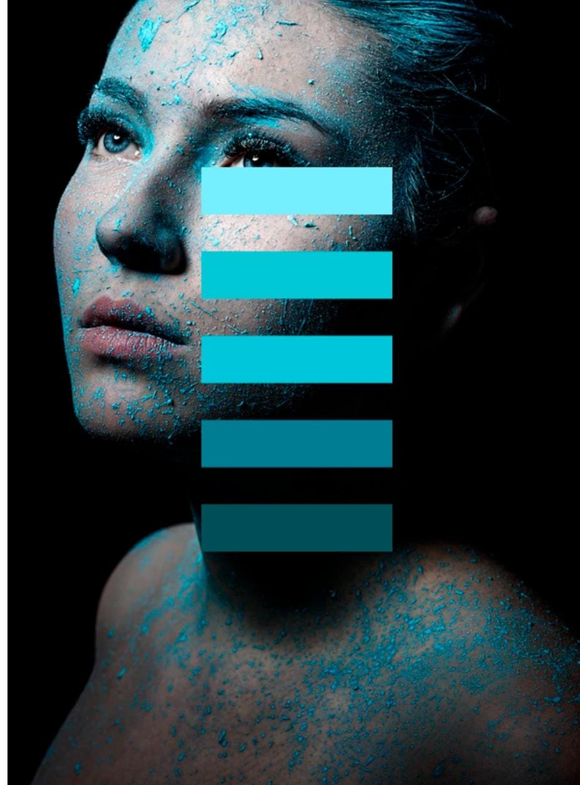

04 de Agosto de 2023
"Media day"

Apesar de estar programando a algum tempo, não vinha atualizando minhas redes sociais, por isso no fim de julho/inicio de agosto resolvi fazer um "media day" (que acabou sendo mais de um) para expor meus projetos.
A imagem que escolhi para representar foi a paleta de cores que usei como inspiração para fazer meu portfólio.